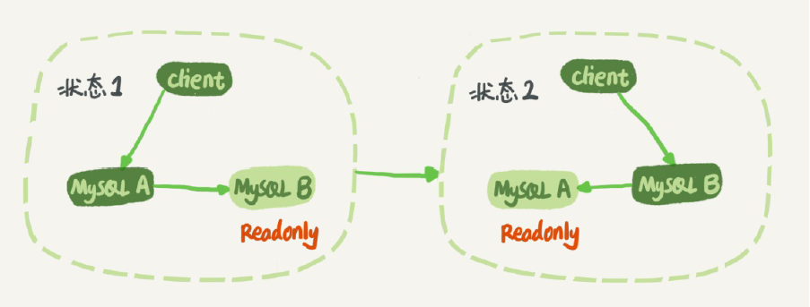
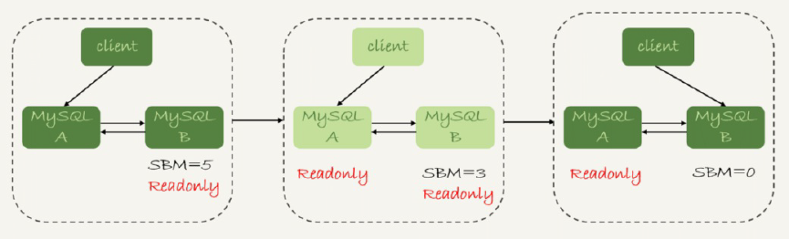

MySQL主从复制原理 #
主从复制-流程 #
 MySQL主从复制
MySQL主从复制
- MySQL master 将数据变更写入二进制日志( binary log, 其中记录叫做二进制日志事件binary log events，可以通过 show binlog events 进行查看)
- MySQL slave 将 master 的 binary log events 拷贝到它的中继日志(relay log)
- MySQL slave 重放 relay log 中事件，将数据变更反映它自己的数据
主从复制-类型 [6] #
- 异步复制
- 半同步复制 MHA + 半同步复制
- 全同步复制 MGR + 全同步
主备切换 [1] #
 因为readonly设置对超级(super)权限用户是无效的，而用于同步更新的线程，就拥有超级权限。

- 一个事务日志同步的完整过程是这样的：
- 在备库B上通过change master命令，设置主库A的IP、端口、用户名、密码，以及要从哪个 位置开始请求binlog，这个位置包含文件名和日志偏移量。
- 在备库B上执行start slave命令，这时候备库会启动两个线程，就是图中的io_thread和 sql_thread。其中io_thread负责与主库建立连接。
- 主库A校验完用户名、密码后，开始按照备库B传过来的位置，从本地读取binlog，发给B。
- 备库B拿到binlog后，写到本地文件，称为中转日志（relay log）。
- sql_thread读取中转日志，解析出日志里的命令，并执行。
Master-Master(双M)循环复制问题 [1] #
- 如果设置了双M结构，日志的执行流就会变成这样：
- 从节点A更新的事务，binlog里面记的都是A的server id；
- 传到节点B执行一次以后，节点B生成的binlog 的server id也是A的server id；
- 再传回给节点A，A判断到这个server id与自己的相同，就不会再处理这个日志。所以，死循 环在这里就断掉了。
主备延迟 [2] #
- 主备延迟原因
- 备库所在机器的性能要比主库所在的机器性能差
- 备库的压力大 解决方案: I. 一主多从。除了备库外，可以多接几个从库，让这些从库来分担读的压力。 II. 通过binlog输出到外部系统，比如Hadoop这类系统，让外部系统提供统计类查询的能力。
- 大事务 解决方案: I. 不要一次性地用delete语句删除太多数据 II. 大表DDL场景, 处理方案就是，计划内的DDL，建议使用gh-ost方案.
- 备库的并行复制能力 [3]
主备切换的策略 [2] #
由于主备延迟的存在，所以在主备切换的时候，就相应的有不同的策略。
- 可靠性优先策略 - 数据不丢、安全可靠

- 可用性优先策略 - 服务可用
小结： 实际的应用中，我更建议使用可靠性优先的策略。 在满足数据可靠性的前提下，MySQL高可用系统的可用性，是依赖于主备延迟的。延迟的时间越小，在主库故障的时候，服务恢复需要的时间就越短，可用性就越高。
高可用方案-Master高可用[5] #
MMM #
早期，不建议使用
MHA - 单主 + #
- MHA-manager 管理Master 使用半同步复制
- 缺陷： 只关注到master，对slave关注不够
MySQL Group Replicatoin(MGR) - 单主 [6]+ #
- 单主(荐) 多主(不推荐)
- 5.7之后支持
- raft协议算法，自动选主节点， 自动故障转移
- 全同步复制, 稳定性高, 强一致性
- 缺陷：
- 不支持gap lock(间隙锁)， 隔离级别需设置为read_commited
- 只能在GTID模式下， 并且日志格式未row格式
- 不支持对表进行锁操作(lock/unlock table)
- DDL语句不支持原子性
- 最多支持9个节点
MySQL Cluster - 多主 #
- 官方亲儿子
- NDB engine， 存算分离
- 实现数据的强一致
- 缺陷：国内使用少， 配置复杂
Galera Cluster - 多主 + #
- 三方提供
- Master和数据Node部署在一起
- WSREP协议来做数据同步
Percona XtraDB(PXC) -多主 #
- 早期
高可用方案 - 数据可靠性[5] #
Raid10( Raid 1+0 ) #
SAN共享存储- 贵 #
DRBD磁盘复制-系统自带 + #
MySQL Log和可靠性 #
{% post_link ‘mysqlLog’ %}
容灾 [7] #
参考 #
- 《MySQL是怎么保证主备一致的？》 MySQL实战45讲 丁奇
- 《MySQL是怎么保证高可用的？》 MySQL实战45讲 丁奇
- 《备库为什么会延迟好几个小时？》MySQL实战45讲 丁奇
- xxx
- 【IT老齐245】综合对比九种MySQL高可用方案
- 【IT老齐099】哎，MySQL高可用架构选型要慎重啊！
- 腾讯云原生数据库 TDSQL-C异地容灾核心能力构建
- MySQL主从复制原理剖析与应用实践 vivo team 未